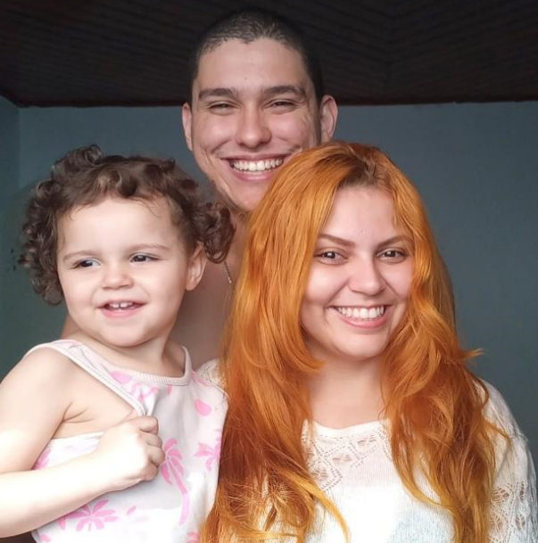

|  | DIEGO SOUSA DA SILVA |
diegosousa1003@hotmail.com |
(11) 96136-4294 | Itapevi - SP | |
Formações | Cursos Técnicos | Idiomas |
|---|---|---|
Experiências profissionais |
|---|
Analista de qualidade |
Plansul - Planejamento e Concultoria |
Monitor de Qualidade |
Plansul - Planejamento e Consultoria |
Auxiliar Administrativo |
Henkel LTDA |
Vida Pessoal
Sou um cara de boa, gosto muito de tecnologia, meus hobbies são jogar basquete, brincar com a minha filha, assistir filmes e séries com a minha esposa, gosto de sair aos fins de semana quando possível para churrascos ou parques Gosto muito de video games, minha filha apesar de pequena demonstra muita curiosidade e aptidão para tecnologia
Sobre meus objetivos pessoais, atualmente estou fazendo um curso técnico de desenvolvimento de sistemas, posteriormente pretendo fazer uma faculdade na mesma área, em análise e desenvolvimento de sistemas ainda pela mesma instituição que estou estudando no caso o centro Paula Souza, e futuramente pretendo fazer uma pós graduação em ciência da computação. Meu objetivo é ser um programador completo, por isso prentendo acumular o maximo de conhecimento da área que eu conseguir.
Profissionalmente, eu sou uma pessoa responsável, que chama a responsabilidade pra si, eu sempre tive destaque em cargos de liderança, justamente por ser sempre proativo e espirituoso, na minha ultima experiencia profissional, eu aprendi muito a lidar com pessoas, como gerir e administrar uma equipe fui reconhecido como um dos melhores no meu setor e nas disputas sempre que podia encabeçava o pódio, respeito hierarquia da empresa, sei onde devo ou não opinar, o que é ou não do meu escopo também sou muito amigável no trabalho, as pessoas tendem a confiar em mim pelo meu jeito de ser, e eu valorizo muito a confiança que me é depositada.